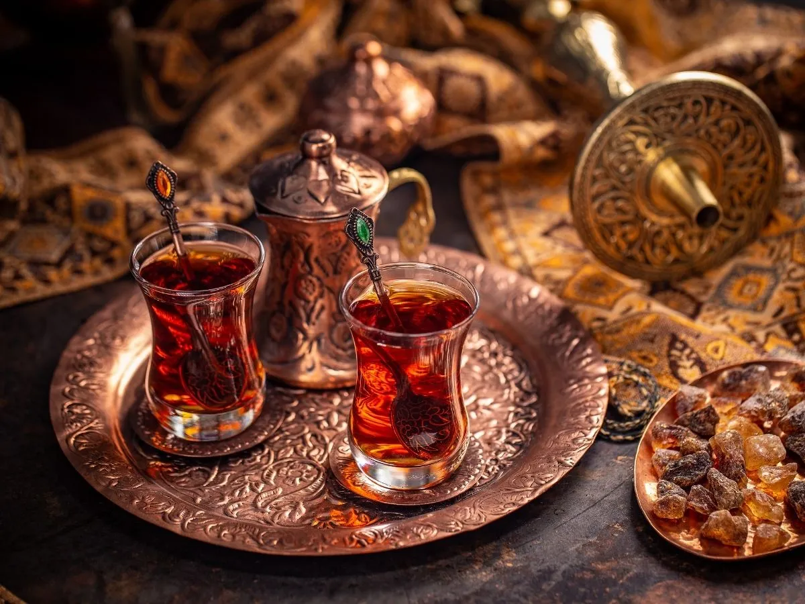
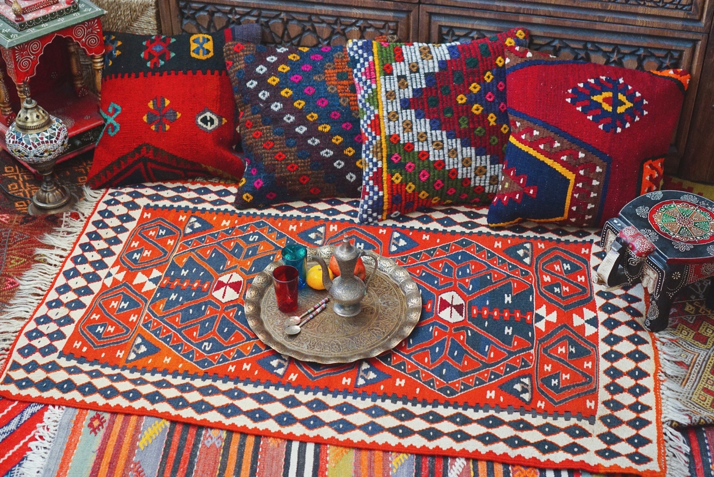
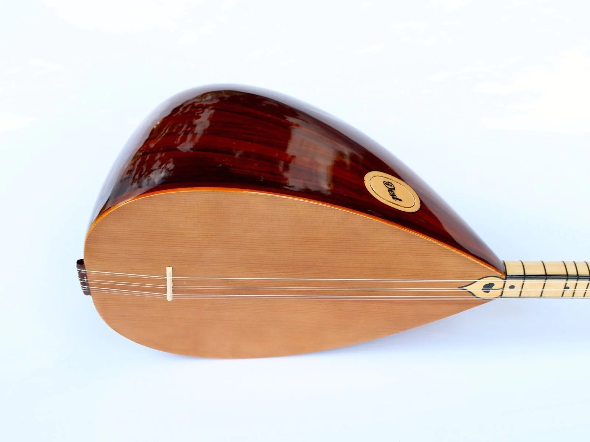
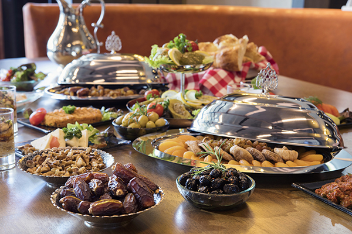
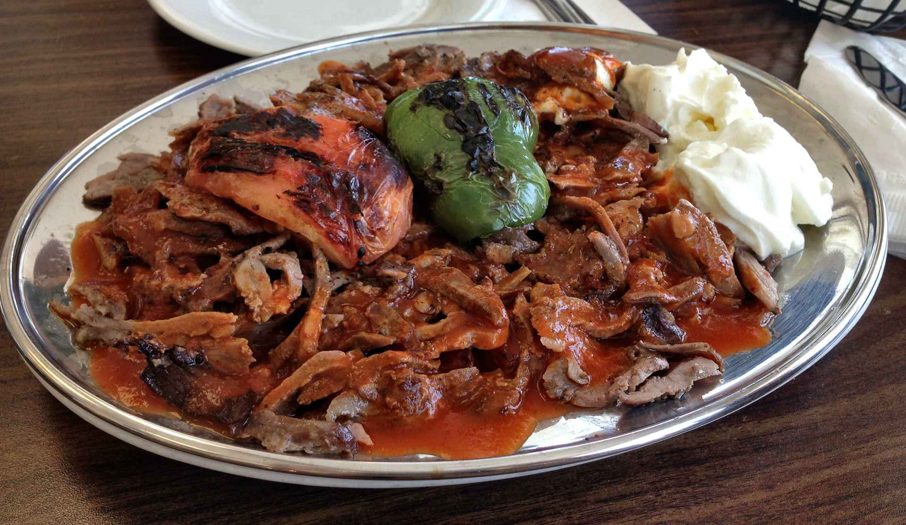
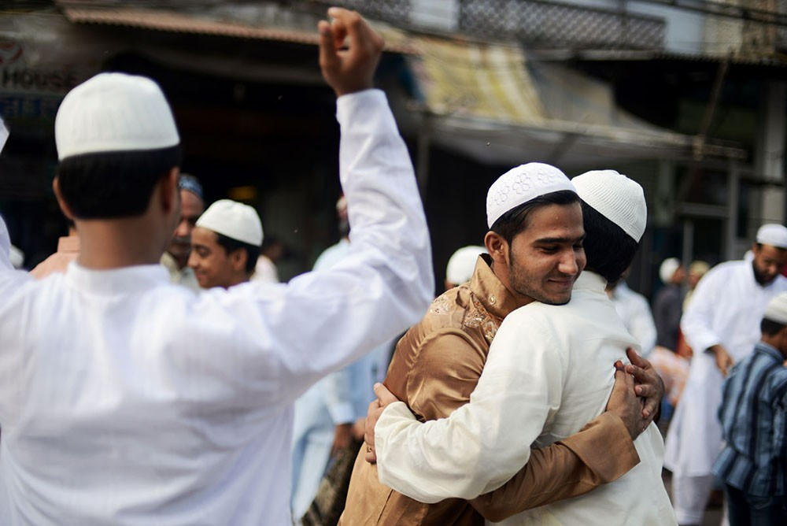

Традиции и обычаи

Чай
Чайные церемонии очень важны для турков. Разговоры, заключение сделок или
обсуждение семейных вопросов не обходятся без чашки чая
Читать дальше...

Килим
Традиционные турецкие ковры должны нести в себе особый смысл. Символы,
изображенные на них, основываются на древней мифологии
Читать дальше...

Баалама
Деревянный музыкальный инструмент, который представляет семиструнную разновидность саза. На нём играют
Читать дальше...

Байрам
Это совокупность традиционных турецких праздников. Например, турки отмечают Ураза-байрам в знак окончания месячного поста
Читать дальше...

Мутфак
Богатая турецкая кухня — мутфак — сочетает в себе разные региональные особенности — как средиземноморские закуски, так и мясные
Читать дальше...

Приветствие
При встрече турки, здороваясь, целуют друг друга в обе щеки. Приветствуя пожилых людей, целуют им руки или прикасаются лбом,
Читать дальше...
Чай
Чайные церемонии очень важны для турков. Разговоры, заключение сделок или обсуждение семейных вопросов не обходятся без чашки чая, а то и не одной.
Как и у казахов, чай — это символ гостеприимства, который позволяет найти общий язык между людьми. Каждый турок пьёт чай как минимум три раза в день и считает, что без него не может обойтись ни одна нормальная беседа.
Турецкий чай пьют из небольших изящных стаканчиков, напоминающих тюльпан или грушу. За основу чайного сырья берут засушенные специальным способом бутоны шалфея — они не только делают его ароматным, но и активизируют его лечебные свойства.